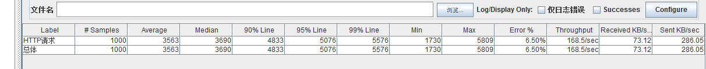
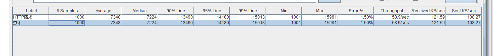

1.语法概述
1.1 数据类型
go语言 : go语言中数据类型总共分四大类，布尔型，数字类型，字符串类型，派生类型，其中数字类型和派生类型还可以细分，int8,uint8,（分别为有符号和无符号）,指针，数组，接口，map等等.
java语言：java语言包括八大基本类型，和引用类型,基本类型包括（四个整数型，两个浮点型，一种字符类型，还有一种布尔型, JAVA中的数值类型不存在无符号的，它们的取值范围是固定的,如byte，-128~127）
go使用关键字 var 定义变量，自动初始化为零值。如果提供初始化值，可省略变量类型，由 编译器自动推断。
//go
var x int
var f float32 = 1.6
var s = "abc"
//java
int a;
String str ="hello world";
在函数内部可以用 ":="方式定义变量，切记不可再函数外部定义变量，会报错。
//go
a := []int{0, 0, 0} // 提供初始化表达式。
a[1] = 10
b := make([]int, 3) // make slice
b[1] = 10
c := new([]int)
c[1] = 10 // Error: invalid operation: c[1] (index of type *[]int)
//java
int[] number = new int[]{1,2,3};
App myapp = new App();
注：go语言是静态语言，不支持类型隐式转换，即便是从窄向宽转换也不行。java语言是动态语言，在运行期间可以改变类型，可以隐式转换和显式转换。
//go
var b byte = 100
var n int = b // Error: cannot use b (type byte) as type int in assignment
var n int = int(b) // 显式转换
//java
char c1='a'; //定义一个char类型
int i1 = c1; //char自动类型转换为int 97
1.2 函数
go 不支持 嵌套 (nested)、重载 (overload) 和 默认参数 (default parameter)，对应java语言的方法。go的函数支持多返回值，返回值也可以缺省，用_代替
//go
func function_name( [parameter list] ) [return_types] {
函数体
}
func swap(x, y string) (string, string) {
return y, x
}
注：大写字母开头的函数，相当于class中的带public关键词的公有函数；小写字母开头的就是有private关键词的私有函数 go的控制流语句相比于java要精简，缺省的（）但是总体的语法都是差不多的
// go
if 布尔表达式 {
/* 在布尔表达式为 true 时执行 */
}
//java
if(布尔表达式)
{
//如果布尔表达式为true将执行的语句
1.3 结构体
go语言的结构体即java的面向对象编程，是对事物抽象的表现，struct 和 class 结构体定义需要使用 type 和 struct 语句。struct 语句定义一个新的数据类型，结构体有中一个或多个成员。type 语句设定了结构体的名称
type struct_variable_type struct {
member definition;
member definition;
...
member definition;}
注：java 有修饰符来限制变量的权限，而go语言是通过大小写来控制的 ，大写字母开头的变量是可导出的，也就是其它包可以读取的，是公用变量；小写字母开头的就是不可导出的，是私有变量，在开发过程中，常用的json字符转装对象，对象转json字符串, 在go语言中，需要将变量的首字母大写，否则无法转换。
1.4 map
/* 声明变量，默认 map 是 nil */
var map_variable map[key_data_type]value_data_type
/* 使用 make 函数 */
map_variable := make(map[key_data_type]value_data_type)
如果不初始化 map，那么就会创建一个 nil map，nil map 不能用来存放键值对，可以用range 来迭代数组，切片，map，channel，在数组和切片中它返回元素的索引值，在集合中返回 key-value 对的 key 值。
nums := []int{2, 3, 4}
sum := 0
for _, num := range nums {
sum += num
}
fmt.Println("sum:", sum)
//在数组上使用range将传入index和值两个变量。上面那个例子我们不需要使用该元素的序号，所以我们使用空白符"_"省略了。有时侯我们确实需要知道它的索引。
for i, num := range nums {
if num == 3 {
fmt.Println("index:", i)
}
}
//range也可以用在map的键值对上。
kvs := map[string]string{"a": "apple", "b": "banana"}
for k, v := range kvs {
fmt.Printf("%s -> %s\n", k, v)
}
//range也可以用来枚举Unicode字符串。第一个参数是字符的索引，第二个是字符（Unicode的值）本身。
for i, c := range "go" {
fmt.Println(i, c)
}
2.走过的坑
- 对于没有使用的过的包，必须注释掉，go语言允许没有用到的东西，会在编译器报错。怀疑作者是处女座！！
- 如果代码中有未使用的变量，那个代码编译的时候就会报错。Go要求在代码中所有声明的变量都需要被用到，当然，全局变量除外
- 字符串无法为 nil ，例如java语言都可以声明string str = null， go语言的字符串默认值是"",java 是null。
- go语言中保留了2个函数，init ，main,Go程序会自动调用init()和main()，所以你不需要在任何地方调用这两个函数。每个package中的init函数都是可选的，但package main就必 须包含一个main函数, init 函数的作用和java的static 代码块作用有点类似，可以用来初始化比较耗时的连接池，加载资源等操作。

